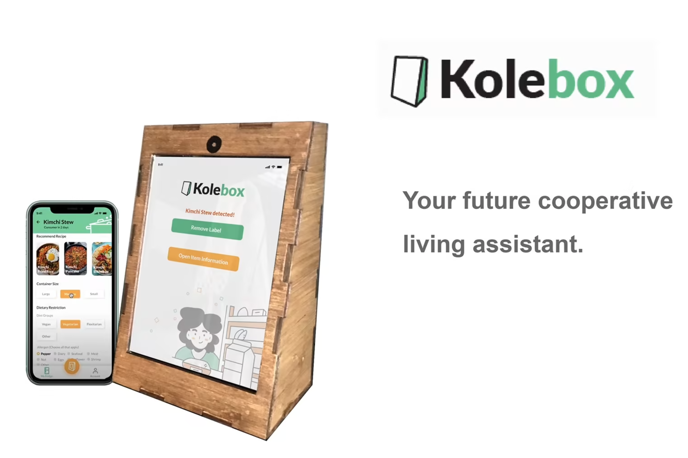

Works
Anti-Couch Potato, Potato
Pat 511/Si 515 | Designed and created a fully functional prototype of a large sweet potato that, like a pet, requires periodic walks otherwise plays annoying music and makes snarky comments. Uses machine learning and intertial tracking to detect whether the potato is being walked or not. Here is the Research Paper and Video
Kolebox
SI 612 | The co-op I lived had a large messy fridge where items and leftovers would get lost and wasted. We designed Kolebox as a system for label making and tracking fridge items to faciliate transparency in a cooperative living environment. Cooperative culture was extremely important when designing this. In the end though our real solution was buying chalk markers, clear containers and starting to incorperate leftovers in our dinners, which has really improved things. Website with video and process.
Foster Portal
Si 582 | Inspired by my experience fostering cats, prototyped an app in Figma for local animal shelter to facilitate passive communication on foster health between fosters and directors to improve crisis management and reduce burden on directors. Try it here. The final paper and a brief presentation.
Psuedo Pocket Scratcher

Pat 511/Si 515 | Uses inertial tracking of the phones movement to program geastures that dynamically manipulate(volume, pseudo scratch effects, on/off) digital audio live, inspired by record scratching. For on demand accesible and mobile performance. Here's a quick demo video.
The Nut Buster and Nut Ninja
ArtDes 420 | Created a food processor controlled with a stress ball and 3D attachments to a nut cracker so you can crack nuts with your mouth and turn nuts into nut butter. Wrote the Nutjob's Guide to Shelling out your Frustrations as a process manual for using them to reflect on and let go of your frustrations. Both are functional and beatifully jank. This was my way of coping with my own stress that semester.
Ferndale.park

SI 538 | Worked with Ferndale’s Department of Transportation to find solutions to a parking shortage. Intitally meant to anlyze a Chariot shuttle route, after it's bankrupcy we were given free rein to explore design solutions. This involved parking data analysis and user research(9 interviews, survey, immersion, experience prototyping) leading us to prototype an app displaying parking availability and alternative transit. Poster
Chi77 Asset Mapper
Collaborated with a team of developers to create Chi77, a B2B open source asset mapping tool of the chicago neighborhoods, using agile development methods. As the primary UX researcher/designer worked on personas, user flows, testing protocols, interactive mockups, conducted 6 usability tests and implemented feedback for the prototype. Figma prototype and Repo
Flip the Bean

Queried Facebook Bean event data and made a word cloud of the names sized based on the number of people interested in the event. Github
Wooden Bowties

I laser cut a flexibe wooden bowtie that Micheal Bloomberg(yeah that one sadly) wore at the 2016 Met gala. He's wearing the shittier V1 of it. They got alot better later on. I've probably gone through nearly 100 iterations by now.
Here's a mildly misleading blog post about it
Not Another Automatic Cat feeder
My former foster cat Lex was old, hated being weighed and needed to weighed, monitored and fed on a schedule to get better, which is hard as students. In 48hr Makeathon my 2 housemates and I made a jank but functional cat feeder that fed on a schedule, calculated how long he took to finish food(using light sensor), measured weight with spring + potenciometer and drafted a web dashboard to display info. We were very proud of it.